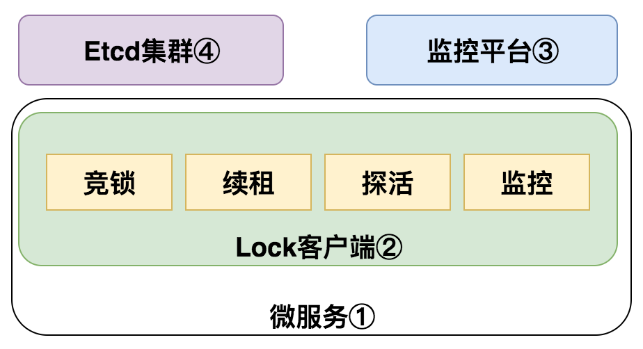

分布式锁设计
业务驱动
场景一：交易商品库锁定，防止用户重复下单，短时间内用户不能重复下单（用户可能会重试）
场景二：MQ消息去重，防止消息重复消费，一般是消费端去重
可能出现重复消费，然后两个消息又同时被不同的consmuer消费，如果没有分布式锁，就可能造成消息重复消费。注意这要考虑的是消息同时消费带来的重复消费。而不是分时消费需要考虑的幂等消费（分布式锁不能解决这种情况造成的重复消费）。可以使用消息里面的message key作为共享资源进行加锁。
场景三：订单操作变更协同，在用户对商品下单后，订单状态为待支付，在某一时刻用户正在读该订单做支付操作，商家对该订单进行改价操作，状态的修改行为需要做串行处理，避免出现数据不一致。
本质：存在共享资源，需要对共享资源进行串行化访问，转换为锁的问题，存在多个进程，所以需要分布式锁。
分布式锁的本质
基于redis的分布式锁方案
原理：唯一线程串行处理
实现方式：setnx，SET if Not eXists，该命令在指定的key不存在的时，为key设置指定的值，设置成功返回1，设置失败返回0，另外释放锁时一定要保证释放的是自己加的锁。
- 存在问题（浅层次）：
单机：单机故障后无法获取锁和释放锁
Master-Savle模式：主挂了，Slave会变成主，但其数据复制是异步的，可能存在在主上获取了锁，但数据还未同步到从，主机挂了，slave升级为master后，可能存在多个进程获取到同一个锁的情况。
锁的时间不可控：比如设置了锁的时间是10s，但业务10秒还没有执行完。希望能续租。为什么不设置很长的时间呢？如果A获取到锁，然后设置了很长的时间，A又挂了。就会造成其他的进程无法获取到锁。（Redis是支持的续租的，通过expire命令，但要通过另外的线程实现自动续租）
- 存在问题（深层次）：
分布式锁要求是一个CP模型，而Redis是个AP模型。
但是否采用Redis的分布式锁，还要看具体的业务场景。对一致性要求不是很高的，可以采用Redis锁（因为它不涉及数据一致性模型，申请锁和释放锁的速度非常快）。但一致性要求高的场景，比如涉及金额，则不能采用Redis锁。
- Redlock算法：
假设有N个Redis Master节点，这些节点都是完全独立的，他们不用任何复制或者其他隐含的分布式协调算法。上面已经描述了如何在单节点环境下安全地获取和释放锁。因此理所当然地应当用这个方法在每个单节点里来获取和释放锁。假设把N设成5，这个数字是一个相对比较合理的数值，因此我们需要在不同的计算机或者虚拟机上运行5个master节点来保证他们大多数情况下都不会同时宕机。一个客户端需要做如下操作来获取锁：
1、获取当前Unix时间，以毫秒为单位。
2、依次尝试从5个实例，使用相同的key和具有唯一性的value（例如UUID）获取锁。当向Redis请求获取锁时，客户端应该设置一个网络连接和响应超时时间，这个超时时间应该小于锁的失效时间。例如你的锁自动失效时间为10秒，则超时时间应该在5-50毫秒之间。这样可以避免服务器端Redis已经挂掉的情况下，客户端还在死死地等待响应结果。如果服务器端没有在规定时间内响应，客户端应该尽快尝试去另外一个Redis实例请求获取锁。
3、客户端使用当前时间减去开始获取锁时间（步骤1记录的时间）就得到获取锁使用的时间。当且仅当从大多数（N/2+1，这里是3个节点）的Redis节点都取到锁，并且使用的时间小于锁失效时间时，锁才算获取成功。
4、如果取到了锁，key的真正有效时间等于有效时间减去获取锁所使用的时间（步骤3计算的结果）。
5、如果因为某些原因，获取锁失败（没有在至少N/2+1个Redis实例取到锁或者取锁时间已经超过了有效时间），客户端应该在所有的Redis实例上进行解锁（即便某些Redis实例根本就没有加锁成功，防止某些节点获取到锁但是客户端没有得到响应而导致接下来的一段时间不能被重新获取锁）。
仍然存在问题，只是概率很小。其本质原因就是因为它不是一个CP模型。比如A、B、C、D、E5台redis，某时刻进程X只在A、B、C三台主机获取到了锁（可能机房网络划分），C上的锁在Master同步Slave之前也挂了，下一时刻进程Y可能在C、D、E上获取锁成，这样存在进程X和进程Y同时获取到锁。
存储模型的选择
对一致性要求高的场景应该选择基于CP存储模型的框架。
| redis | zookeeper | etcd | |
|---|---|---|---|
| 一致性算法 | 无 | paxos/ZAB | raft |
| CAP | AP | CP | CP |
| 高可用 | 主从 | (N+1)/2可用 | (N+1)/2可用 |
| 接口类型 | 客户端 | 客户端 | http/grpc，V3版本也有客户端 |
| 实现 | setNX | crateEphemeral | restful API/V3客户端 |
Zookeeper对锁实现使用创建临时节点和watch机制，并发执行效率、扩展能力、社区活跃度等方面低于etcd。推荐采用etcd。采用etcd时要保证此磁盘的写入性能，最好采用SSD，可以采用PCI-e或NVMe。因为它有一致性模型，要保证大于N/2个节点写入成功，才算成功。
高可用分布式锁设计目标
- 强一致性CP
- 服务高可用、系统稳健
- 锁自动续约及其自动释放
- 代码高度抽象业务接入极简（公共接口开发原则。针对分布式锁继承Closeable接口，通try语句自动释放）
- 可视化管理后台，监控及管理
- 业务可重入

续租：由单独的后台线程做。比如key的租期是10ms，后台心跳线程为3ms，心跳线程负责在拿到key之后，每3ms cas唯一凭证uuid。
基于Etcd实现分布式锁
- 使用场景一：申请锁
① 业务方申请锁资源，调用时提供key，ttl
② etcd生成uuid，作为当前锁的唯一凭证，将（key，uuid，ttl）写etcd
③ 检查etcd中此key是否存在，如没有，尝试写入key，写入失败，拿锁失败，写入成功拿到锁
④ 拿到锁后，心跳线程启动，心跳线程维持时间为ttl/3，compare and swap uuid，从而将key值续租
相关API
申请锁：curl http://localhost:12379/v2/keys/mylock -XPUT -d value=uuid -d ttl=5 -d prevExist=false
更新租约：curl http://localhost:12379/v2/keys/mylock -XPUT -d ttl=5 -d refresh=true -d prevExist=true
删除锁：curl http://localhost:12379/v2/keys/mylock?prevValue=uuid -XDELETE
- 场景二：申请锁，但锁已被持有
① 业务方申请锁资源，调用时提供key，ttl
② 检查etcd中key是否存在，如果已存在，拿锁失败
- 场景三：锁的清理
① 如果调用方正常结束，通过cas接口调用delete方法方法自动清理etcd中的key值
② 如果调用方异常终止，等待原有锁ttl过期后，锁资源释放
分布式锁特殊场景
场景一：分布式锁只是在同一自然时间的互斥锁，本身不解决幂等性问题，接入业务需要完善从获取锁到释放锁之外的数据幂等逻辑
场景二：锁没有按照预期续租，GC时间太长造成续租线程等待。解决方法：适当延长锁的时间。
场景三：etcd内部协调发生问题，如Leader节点挂了，选主中，或Raft日志数据同步发生错误或不一致的问题。这个时候API会以LockException的形式抛出异常，需业务上做逻辑补偿处理。